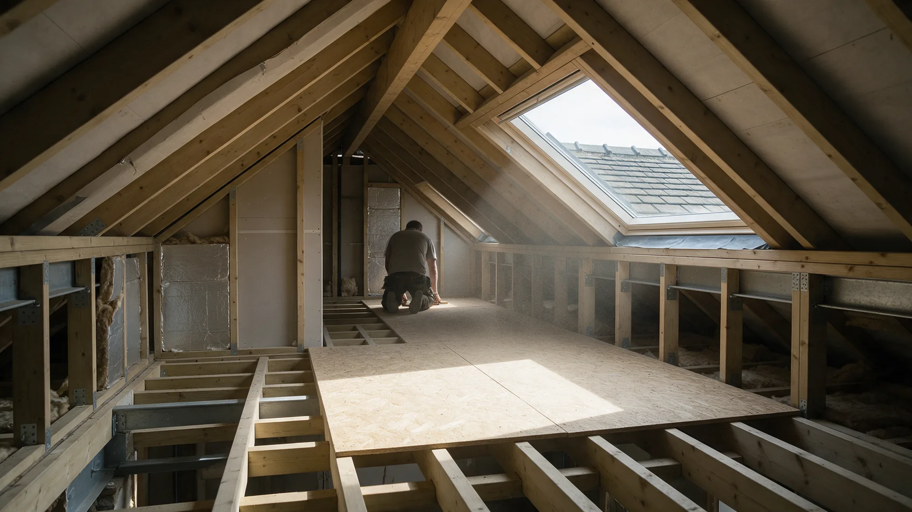
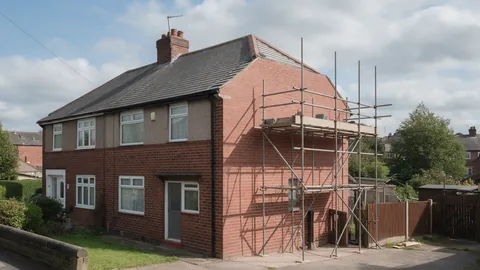
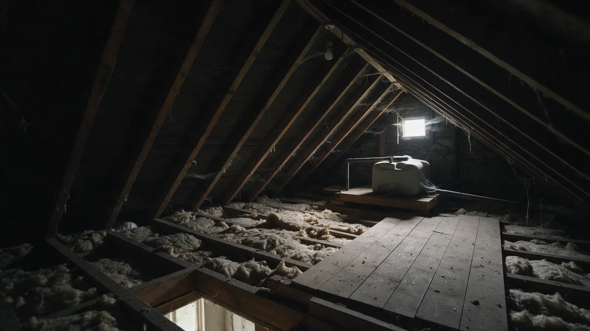
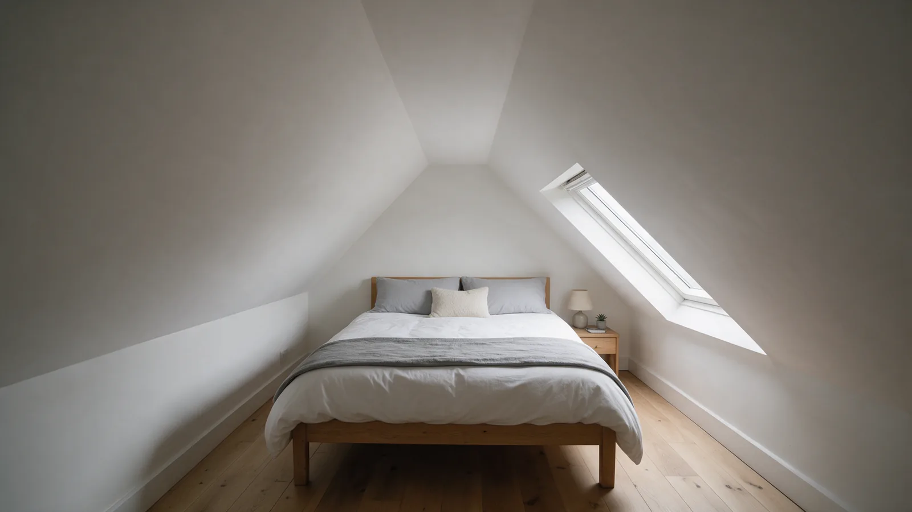
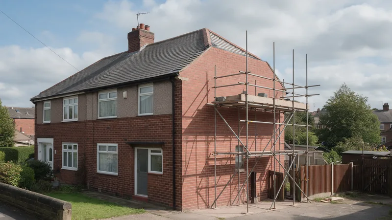
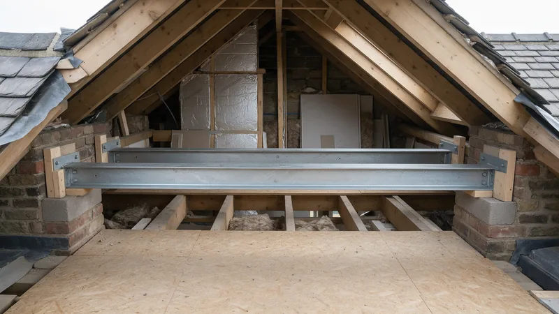
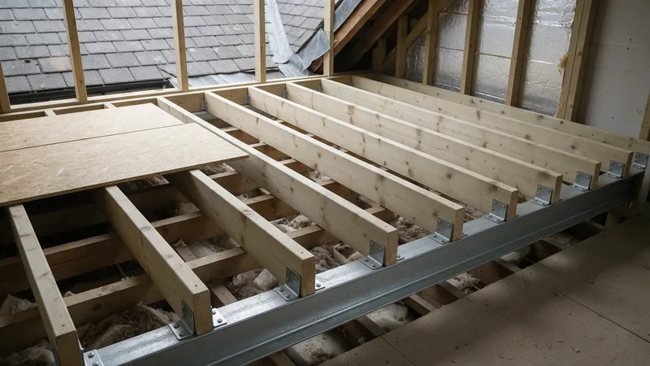
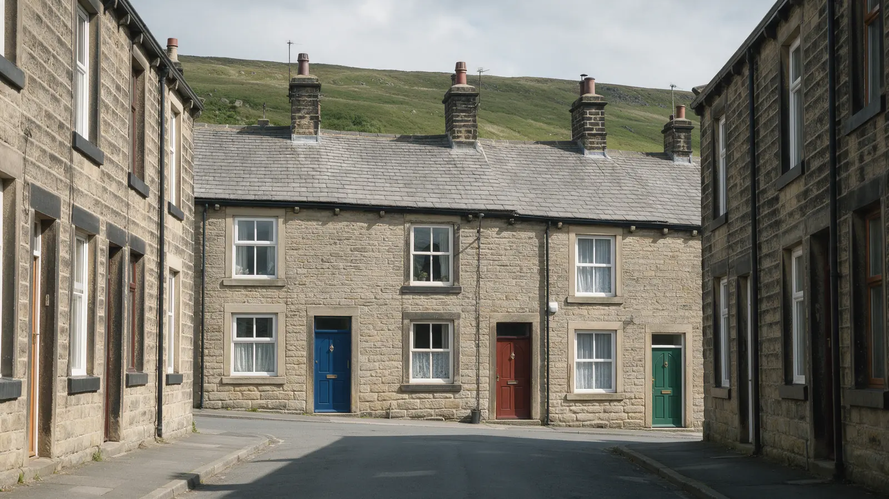

Generated photoLoft conversions · Kirklees
You already own the room.
It just has no floor, no stairs and no light.
Dormers, rooflight conversions, hip to gable, loft bedrooms with en suites, loft boarding and the staircase that makes any of it possible. Measured and drawn before anybody books a skip.
What decides it
The number at the ridge is not the number that counts.
Two houses with the same footprint and the same floor, under two different roofs. The shaded part is where the ceiling is above standing height. It is the same person walking about in both.
Same floor · same standing line · shallower pitch
Height at the ridge is not the number that counts
Plenty of lofts measure well at the ridge and still give you a narrow strip of room with a sloping cupboard either side of it. The ceiling falls away from the ridge at the pitch of the roof, so on a shallow roof it runs out of height a short way out from the middle. That is the number that decides what you get, and it is the one nobody measures from the hatch.
Same floor · same standing line · steeper pitch
The same house, and nearly all of it is a room
Steeper pitch, same footprint, and the shaded part runs most of the way out to the eaves. The bit at each side that is too low never goes to waste either: it is where the wardrobes, the drawers and the eaves cupboards go, so the useful floor is wider again than the part you can stand up in.
Drawn in the browser rather than photographed, and set out from the pitch rather than sketched. There is no measurement on either drawing on purpose: yours depends on your roof, and we will come and measure it.
What we do
Six kinds of job.
 Generated photo
Generated photoDormer loft conversions
A box built out of the back slope, so the ceiling goes flat and the room has a wall you can stand a wardrobe against instead of a slope you keep ducking under.
 Generated photo
Generated photoRooflight conversions
The roof line left exactly as it is, with windows let into the slope. The cheapest way up there when the roof already has the height to spare, and the quickest.

Generated photoHip to gable conversions
For the semi or the end terrace where the roof slopes in at the side and the loft runs out to a point. The end wall gets built up square and the pointed bit becomes room.
 Generated photo
Generated photoLoft bedrooms with en suites
A bedroom with its own shower room, laid out so the shower and the basin sit where the ceiling is highest and the bed goes under the slope, which is the only way the room works.
 Generated photo
Generated photoLoft boarding and storage
Not a conversion. Boards on raised legs above the insulation so the insulation still works, a hatch you can get through and a light that comes on. The job most people want first.
 Generated photo
Generated photoStaircase design for lofts
Where the flight goes, which way it turns and what it takes off the floor below. Decided first, on paper, because everything else in the loft follows it.
How it works
Four steps, and a tape in the loft first.
You tell us the house
A call, the chat box or the form. What sort of house it is, what you want up there and what you have already looked at. A photograph taken from the hatch tells us more than any measurement you could give us over the phone.
Somebody goes up there
A tape from the joist to the ridge in the middle and at both ends, a look at what is holding the roof up, a look at the landing below for the stairs, and a note of the tank and the pipes. Half an hour, and it is the part that decides whether the quote is honest.
Drawings, engineer, paperwork
Measured drawings, a structural engineer on the beams and the new floor, the building control application, and the planning side checked for your actual address rather than for the street. You get the drawings either way.
Then the work, in stages
Scaffold, floor, roof, watertight, stairs, lined out, finished. You get the order of it in writing, with the noisy weeks marked, and the landing sheeted every morning Sample.


Illustrative, not a real job. Both pictures were generated for this demo from the same loft, so the roof shape and the viewpoint are the same in each.
Before and after
Same roof. Same shape. A floor and some daylight.
Drag the slider. Nothing about the roof has moved. The pitch is the same, the ridge is the same height, the space was always that size.
What changed is the four things a loft has none of when you first put your head through the hatch. A floor that carries a bed rather than a few boards laid over joists that were only ever holding up a ceiling. A way in that is not a ladder. Daylight, which is one rooflight and is the single biggest change for the money. And warmth, which is insulation between and under the rafters with an air gap left above it, so the room is usable in February and not just in May. None of that is a bigger house. All of it is the part you cannot see from the hatch.
See the rest of the workOur work
Sample jobs.
16 jobs
 Generated photoNew floor in, roof still openHolmfirth · Sample
Generated photoNew floor in, roof still openHolmfirth · Sample Generated photoDormer room, finishedMirfield · Sample
Generated photoDormer room, finishedMirfield · Sample Generated photoRoof line left aloneSlaithwaite · Sample
Generated photoRoof line left aloneSlaithwaite · Sample Generated photoShower where the roof is highestDewsbury · Sample
Generated photoShower where the roof is highestDewsbury · Sample Generated photoA desk under the slopeKirkburton · Sample
Generated photoA desk under the slopeKirkburton · Sample Generated photoCupboards in the low bitHolmfirth · Sample
Generated photoCupboards in the low bitHolmfirth · Sample Generated photoBox out across the backMirfield · Sample
Generated photoBox out across the backMirfield · Sample Generated photoFramed up and sheeted overDewsbury · Sample
Generated photoFramed up and sheeted overDewsbury · Sample
Generated photoThe pointed end squared offMirfield · Sample
Generated photoSteels on their padstonesSlaithwaite · Sample
Generated photoA floor that carries a roomDewsbury · Sample Generated photoTwo layers and an air gapKirkburton · Sample
Generated photoTwo layers and an air gapKirkburton · Sample Generated photoLined out, ready for plasterHolmfirth · Sample
Generated photoLined out, ready for plasterHolmfirth · Sample Generated photoOak and paint, going upKirkburton · Sample
Generated photoOak and paint, going upKirkburton · Sample Generated photoThe hole in the ceilingSlaithwaite · Sample
Generated photoThe hole in the ceilingSlaithwaite · Sample Generated photoBoards up off the insulationDewsbury · Sample
Generated photoBoards up off the insulationDewsbury · SampleEvery job here is a made up sample with a generated picture. Tap one to see it bigger.
Where we work
Based in Kirklees.
Based in Kirklees Sample. These are the towns we cover most. Coverage is a sample for this demo. A bit outside it? Ask anyway, it depends what else is on that month.

Generated photoWhat people say
Sample reviews.
Sample review
What sold it was being told no first. The first fella who came out said yes to everything. This one went up with a tape, came down and said the stairs could not go where we wanted them because of the slope over the top, and drew it on a bit of paper. Then showed us the way it would work. Took a slice off the back bedroom in the end and we would do it again.
Nadia, Mirfield
Sample review
Lived in the house the whole way through, three of us and a dog. Not pretending it was quiet, because the fortnight the roof was open was grim. But the stairs went in when they said, the landing was sheeted every morning and the downstairs ceiling has not got a crack in it anywhere.
Gareth, Holmfirth
Sample review
We only wanted it boarded for storage and that is what we got, no sales pitch for a bedroom we had not asked about. Boards up on legs so the insulation is not squashed, a proper hatch and a light that works. Back a year later for the real job.
Priya, Dewsbury
Sample review
Trussed roof, which I had read was a problem, and it was explained to me rather than talked around. New floor and the support went in before anything came out. Cost more than the quote I had off somebody who did not mention it at all, which tells you something.
Tom, Slaithwaite
Made up for this demo. Raftergill does not exist, so neither do its customers.
Questions
What people ask us first.
Is my loft suitable for a conversion?
Four things decide it and you can check three of them yourself in twenty minutes with a torch. How much height there is, measured from the top of a ceiling joist straight up to the ridge timber. What is holding the roof up, which is either slender timbers in a W across the middle or chunky beams along the slopes with a clear space between. Where the stairs could come up, and which way they would have to climb. And what is up there already, meaning the tank, the pipes and the wiring.
What we will not do is give you a height and call it a rule, because it is not one. The same number is a comfortable room under a steep roof and a narrow strip under a shallow one, and the slope over the top of the stairs can rule out a loft that measures perfectly. So we come and measure, look at the stairs, and tell you straight. If the answer is no you will hear it on the first visit, before anybody has paid for drawings.
Do I need planning permission?
Two different things get run together here. Planning permission is about what the outside looks like and what it does to the neighbours. Building regulations are about whether the thing is safe to use, and a loft conversion needs those every time, no exceptions.
On planning, a good number of rear dormers and rooflight conversions on ordinary houses are done under permitted development, which means you do not need a full application, and we would get you a lawful development certificate so there is paperwork to show a buyer. What takes that away is a flat, a house that has already been extended under those rights, a conservation area, a listed building, an article 4 area or anything on the front roof slope facing the road. Kirklees keeps the local detail, and we check it for your address rather than guessing from the street.
How long does a loft conversion take?
On a straightforward job, think in terms of a couple of months on site for a rooflight conversion and a fair bit longer for a dormer or a hip to gable, where the scaffolding, the roof work and the weather all get a say. Before any of that there are drawings, a structural engineer and the building control application, which take their own few weeks and are worth not rushing.
What stretches it is nearly always the roof being open: that part has to wait for weather, and no honest programme pretends otherwise. You will get a written order of work with the stages on it, and we will tell you which week is the noisy one and which week the stairs go in.
Can we stay in the house?
Almost everybody does, and most of it is genuinely fine, because the work is happening above your ceiling rather than in your rooms. The two parts that are not fine are the day the stair opening gets cut, which is dust and noise in the middle of the house, and the fortnight the roof is open, which is noise above your bedroom from early on.
What we do about it is simple and it matters: the landing and the stairs sheeted and taped every morning, the route in and out kept to one door, the waste bagged as it goes rather than piled up, and the floor vacuumed at the end of the day rather than the end of the job. If somebody in the house works nights or there is a baby in, say so when you ring and we will plan the noisy weeks round it.
Will I lose space on the landing for the stairs?
Usually a bit, and where it comes from is the thing worth deciding first rather than last. A flight has to rise somewhere and come up into air, so it either goes over your existing stairs in the same stairwell, which costs you least, or it turns and takes a slice off whichever room is next to the landing.
The reason it is not always a free choice is the slope. Run the flight so it climbs towards the eaves and the roof comes down to meet your head right at the top step, and no amount of height at the ridge fixes that. So the stairs get drawn first, and then the room upstairs is laid out around where they land. There is a drawing of both ways under Advice, and it is the clearest two minutes you can spend on this before you ring anybody.
What about the water tank and the pipes?
All moveable and none of it is a reason not to do the job. An old cold water tank usually goes altogether when the system changes, and if it has to stay it gets moved and boxed in somewhere out of the way. A soil pipe coming up through the loft gets rerouted or boxed. Old wiring laid across the joists gets lifted and run properly.
It does mean other trades, and the honest point is that moving a tank can turn into a conversation about the heating system. We would rather have that conversation at the quote than find it in week three, so it goes on the quote as a line with what we know and what we do not.
Do you do the drawings and the paperwork?
Yes. Measured survey, drawings, the structural engineer on the beams and the floor, and the building control application. You get the drawings whether or not you use us for the building work, which feels like the fair way round.
We would also sort the lawful development certificate where the job is permitted development, and the party wall notices where there is a shared wall, which on a semi or a terrace there nearly always is. None of that is exciting and all of it is the bit that goes wrong on jobs where nobody did it.
Can you do a shower room up there?
Usually, and it is the thing that turns a loft bedroom into the room everybody actually wants. The layout is the whole job: the shower and the basin go where the ceiling is highest, because standing up is not optional in a shower, and the bed goes under the slope where you are lying down anyway.
What has to be checked first is where the waste can run to and whether the pressure gets up there, both of which depend on the house rather than on the loft. We look at those on the first visit, because finding out in week five is how an en suite turns into a wardrobe.
General guidance written for this demo from trade knowledge, not advice on your house.
Advice
Worth reading first.
 Generated photo
Generated photoIs your loft high enough? How to measure
Where to put the tape, what to measure to, and why the number at the ridge is not the number that decides it. Ten minutes with a torch tells you most of what you need.
Generated photoDormer or rooflight: which conversion
The same loft drawn both ways, so you can see what the box on the back actually buys you and when leaving the roof alone is the better answer.
 Generated photo
Generated photoPlanning and building regulations for lofts, in plain words
Two different things that people run together, and what each one is actually asking of your loft. Written in the order it happens rather than the order the forms come in.
About this demo
What this demo shows.
Raftergill is not a real firm. The site is here to show a loft conversion firm what Clockwork AI builds, in six parts.
No prices here. What it would cost for your firm is a conversation, not a web page. The Clockwork number is in the bar at the top.
Shall somebody come up and put a tape on it?
Tell us what sort of house it is and your postcode, and we will come and measure the loft properly before anybody quotes you.